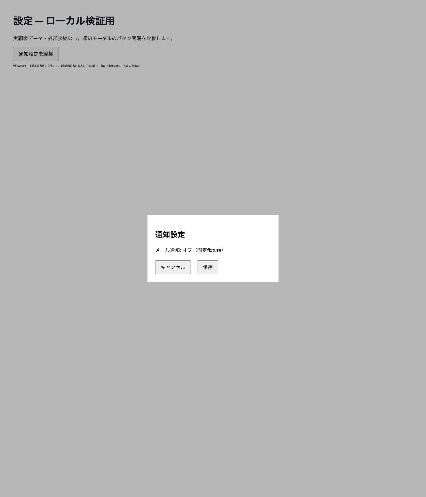
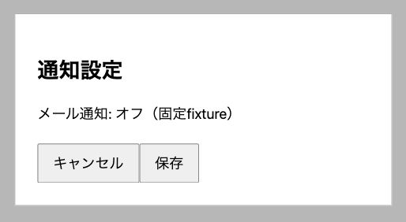
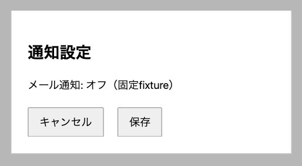

PR VISUAL REVIEW / example/local-fixture
PR #1 の画面比較
PCのみ / 明示指定 — 保存済みのローカルfixture画像を再表示。PCのみ。
- PRで要対応: 0
- 任意改善: 0
- 要調査: 0
- 未確認ケース: 0
件数は記録された指摘の集計です。0件でも安全性・マージ可否の保証ではありません。
コミットと実行条件
- Before
080006e935a661ac2f186ff63d27a91075d2fedd- After
b5c0016f0aa29d746a0f84dd1b13ae3607a67863- 比較元
- merge-base
- 撮影日時
- 2026-10-07T06:53:18+09:00
- ブラウザ
- Google Chrome（インストール版154.0.8037.98、実行中versionは未照合）
viewport 1551x1806 CSS px; DPR 1.100000023841858; locale ja; Asia/Tokyo; macOS 26.6.2; 同じChrome sessionと既定zoom; scroll top; メール通知オフの固定fixture; animationなし
ローカルfixture: 通知設定モーダル
意図した変更を確認Beforeはキャンセルと保存の境界が接しています。Afterは両ボタンの間に間隔があり、モーダル内の見出し・本文も表示されています。画像を目視確認しました。
PC / 1551 × 1806 CSS px
撮影基準: 通知設定モーダル — 同じviewportの中央に表示された状態。原画像は未加工。



変更箇所の詳細を開く




操作手順と比較条件
画面: /
選定根拠: tests/smoke_server.pyが作成した2つのGitコミット。index.htmlの.actions gapだけを0pxから24pxへ変更。実PRではありません。
ブラウザ: Google Chrome（インストール版154.0.8037.98、実行中versionは未照合）
共通条件: viewport 1551x1806 CSS px; DPR 1.100000023841858; locale ja; Asia/Tokyo; macOS 26.6.2; 同じChrome sessionと既定zoom; scroll top; メール通知オフの固定fixture; animationなし
個別条件: viewport 1551x1806 CSS px; DPR 1.100000023841858; locale ja; Asia/Tokyo; macOS 26.6.2; 同じChrome sessionと既定zoom; scroll top; メール通知オフの固定fixture; animationなし
- Before http://127.0.0.1:56186 と After http://127.0.0.1:56188 をそれぞれ開く
- 通知設定を編集をクリック
- モーダルと2つのボタンが表示されたことを確認
- 同じviewportで全体を撮影。ツールclip x=570,y=840,width=565,height=310でモーダル全体の拡大画像も取得。保存画像を開いて欠けがないことを確認
未確認事項・制約
- これはローカルで作成した検証用fixtureです。実GitHub PRの解析・画像アップロード・コメント投稿は実施していません。
- Claude Codeでの実操作、Safari、認証が必要な実アプリ、モバイル実撮影は未実施です。
- Chromeの実行中versionと数値zoomは未照合です。前後で表示されたviewportとDPRの一致を確認しました。